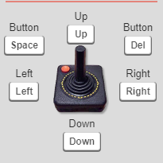

Reinforcement Learning for Robotics
Lunch and Learn - 2025/July/28
ü¶Ü Alejandro Su√°rez Hern√°ndez
Story time
What's RL?
Study of AI algorithms that seek to learn the optimal behavior of a situated agent through the maximization of a reward signal.This definition hints at RL being part of...
- ... machine learning
- ... decision-making and optimal control
RL in the machine learning scene
| Supervised | Unsupervised | ✨Reinforcement learning✨ | |
|---|---|---|---|
| Purpose | Prediction | Pattern discovery | Optimal behavior |
| Labeled data? | Yes | No | Self-labeled |
| Performance evaluation | Test set score | Not straightforward, application-dependent |
Reward curves |
| Real-time requirement | Not necessarily | Not necessarily | Yes |
| Example applications | Kinect skeleton detection Viola-Jones face detection Image segmentation |
Anomaly detection Clustering Autoencoders |
Outstanding game AI Quadruped gait learning In-hand manipulation |
RL in the decision-making scene
| Handcrafted program | Automatic planning | ✨Reinforcement learning✨ | |
|---|---|---|---|
| Robustness | Very robust and reliable | Very robust and reliable | Might be unreliable |
| Human effort | High | Initially high, low after | Low |
| Explainability | Explainable | Explainable | Poor |
| Adaptability | Highly specific solution | Extrapolable to related tasks | Highly adaptable |
| Training time | None | None | High |
| Runtime computation | Depends on programmer | Depends on domain | Low |
| Solvable tasks | Any, limited by skill | Strong with symbolic reasoning | Any, but very data-hungry |
More graphically...

Timeline (pre 2000s)
Timeline (post 2000s)
Background: Markov Decision Processes (MDPs)
An MDP consists of $ \langle S, A, P, R, \gamma \rangle $, where:
- $ S = \left\{ s_0, s_1, s_2, \dots \right\} $ is the state space.
- May be discrete ($ \mathbb{Z} $) or continuous ($ \mathbb{R}^n $).
- $ A = \left\{ a_0, a_1, a_2, \dots \right\} $ is the action space.
- May be discrete or continuous.
- $ P : S \times A \times S \rightarrow \left[ 0, 1 \right] $ is the transition probability function.
- $ P(s,a,s') $ is the probability of $ s \xrightarrow{a} s' $.
- $ R : S \times A \rightarrow \mathbb{R} $ is the reward function.
- $ R(s,a) $ is the reward for taking action $ a $ in state $ s $.
- $ \gamma \in \left[ 0, 1 \right] $ is the discount factor.
- $ \gamma \rightarrow 0 $ give less weight to future rewards.
- Usually close to 1 (e.g. $ \gamma = 0.995 $).
Policies
Define agent behavior.
- May be deterministic: $ \pi : S \rightarrow A $ maps state to action...
- Or stochastic: $ \pi : S \times A \rightarrow \left[ 0, 1 \right]$ maps state and action to probability.
Accumulated reward
If the agent obtains rewards $ r_0, r_1, r_2, \dots $
- The accumulated reward is $$ G = r_0 + \gamma r_1 + \gamma^2 r_2 + \dots = \sum_{i=0}^\infty \gamma^i \cdot r_i $$
- If $ \gamma \lt 1 $, then $ |G| \lt \infty $ is guaranteed.
- Value function: $ v_\pi (s) = \mathbb{E}_\pi \{ G | s_0 = s \} $
- Action-value function: $ q_\pi (s, a) = \mathbb{E}_\pi \{ G | s_0 = s, a_0 = a \} $
- RL's goal: learn $ \pi $ that maximizes $ v_\pi(s) $.
- A deterministic optimal policy always exists.
Episodic, undefined, and continuing tasks
Episodic
- Have terminal states
- Terminal states mark end of episode
- A terminal state will eventually be reached

Undefined
- Have terminal states
- Terminal states mark end of episode
- The task can continue indefinitely or until terminal state
Continuing
- Never-ending
- Discount should be $ \gamma \lt 1 $
Example: identify the MDP elements of the Cart Pole problem
- State space: $ s = \left[ x \quad v_x \quad \theta \quad w_\theta \right]^T \in \mathbb{R}^4 $
- Action space: $ a = f_x \in \left[-1, 1\right] $
- Reward: $ R(s,a) = \cos \theta $
- Episodic or continuing? Continuing
- Discount: some $ \gamma \lt 1 $ (e.g. $ \gamma = .99 $)
Example: identify the MDP elements of a videogame
- State space: $$ s = \begin{bmatrix} r_{11} & g_{11} & b_{11} & \dots & r_{w1} & g_{w1} & b_{w1} \\ & \vdots & & \ddots & & \vdots & \\ r_{1h} & g_{1h} & b_{1h} & \dots & r_{wh} & g_{wh} & b_{wh} \end{bmatrix} \in \mathbb{R}^{h \times 3 \cdot w}$$
- Action space:  $ \in \{ 0, 1, 2, 3, 4, 5 \} $
- Reward: $ R(s,a) = 1_{s\text{ is a victory state}} $
- Episodic or continuing? Episodic (ends in victory or game over)
- Discount: arbitrary, but probably $ \gamma = 1 $ works best
Optimal policy: the Bellman optimality equation
- We want $ \max_\pi v_\pi(s) $, let's denote it $ v_*(s) $
- Bellman optimality equation: $$ v_*(s) = \max_a \left[ R(s,a) + \gamma \sum_{s'} P(s,a,s') v_*(s') \right] $$
- Also for $q_*(s,a)$: $$ q_*(s,a) = R(s,a) + \gamma \sum_{s'} P(s,a,s') \max_{a'} q_*(s',a') $$
Algorithms for calculating the optimal policy
Value iteration
- Initialize $ V_0(s) $ arbitrarily over all $ s \in S $
- Apply update rule $$ V_{i+1}(s) = \max_a \left[ R(s,a) + \gamma \sum_{s'} P(s,a,s') V_i(s') \right] $$
Policy iteration
- Initialize deterministic $ \pi_0 (s) $ and $ V_0(s) $ arbitrarily over all $ s \in S $
- Apply update rules $$ V_{i+1}(s) = \left[ R(s,\pi_i(s)) + \gamma \sum_{s'} P(s,\pi_i(s),s') V_i(s') \right] $$
- $$ \pi_{i+1}(s) = \argmax_a \left[ R(s,a) + \gamma \sum_{s'} P(s,a,s') V_i(s') \right] $$
Why not just use VI or PI?
- Sweeps over entire state space
- Assumes explicit knowledge of $ P(s,a,s') $
Basic idea of RL

- Observe current state
- Sample $ a $ from behavioral policy.
- Execute $ a $, observe new state and reward.
- Update target policy
- Repeat from 2
The exploration vs exploitation dilemma
Should we...
- ... pick a good action?
- Or try to discover a better one?
Some additional concepts...
-
On-Policy learning vs Off-Policy learning
- On-policy: target-policy $ = $ behavior policy
- Off-policy: target-policy $ \neq $ behavior policy
-
Monte-Carlo (MC) vs Temporal Difference (TD):
- MC: update target policy at the end of each episode.
- TD: update target policy after each transition.
Tabular methods
- Huge $ S \times A $ that stores $ q(s,a) $.
- Unfeasible for large state/action spaces...
- ... but are exact.
- ... and good for starters.
Example for just 4 states and 2 actions
| $a=0$ | $a=1$ | |
| $s = 0$ | $ q(0, 0) $ | $ q(0, 1) $ |
| $s = 1$ | $ q(1, 0) $ | $ q(1, 1) $ |
| $s = 2$ | $ q(2, 0) $ | $ q(2, 1) $ |
| $s = 3$ | $ q(3, 0) $ | $ q(3, 1) $ |
SARSA
- Stands for State-Action-Reward-State-Action
- On-policy
- TD learning
-
Exploration is built into target policy
- Typically uses $ \epsilon $-greedy exploration
Initialize Q(s, a) arbitrarily for all states s and actions a
For each episode:
Initialize state s
Choose action a from s from Q using ε-greedy
Repeat until s is terminal:
Take action a, observe reward r and next state s'
Choose next action a' from s' using policy derived from Q (e.g., ε-greedy)
Update Q-value:
Q(s, a) ← Q(s, a) + α * [r + γ * Q(s', a') - Q(s, a)]
s ← s'
a ← a'
Q-Learning
- Off-policy
- TD learning
-
Exploration is built into behavior policy
- Typically uses $ \epsilon $-greedy exploration
- Widely used
Initialize Q(s, a) arbitrarily for all states s and actions a
Loop for each episode:
Initialize state s
Repeat until s is terminal:
Choose action a from s using ε-greedy policy derived from Q
Take action a
Observe reward r and next state s'
Update Q(s, a):
Q(s, a) ← Q(s, a) + α * [r + γ * max_a' Q(s', a') - Q(s, a)]
s ← s'
Function approximation
- Don't represent $ q(s,a) $ explicitly in memory...
- ... instead use a function approximator $ q_\theta (s,a) $
- Maybe a linear regressor: $ q_\theta(s,a) = \theta_1 x_1 + \dots + \theta_n x_n $
- ... or a neural network.
- Offers advantage of generalization!
- But exact solutions might not be longer possible.
- And we might have unstability or converge problems.
Deep Q Network

Policy gradient: REINFORCE
- On-Policy learning
- Monte-Carlo learning
- Parametric policy: $ \pi(a|s;\theta) $
- Update policy directly: $$ \theta \leftarrow \theta + \alpha \nabla_\theta \mathbb{E}_{\pi_\theta} \{ G \} $$
Initialize θ arbitrarily
Repeat forever:
Generate an episode:
s₀, a₀, r₁, s₁, a₁, r₂, ..., s_T
by following π(a | s; θ)
For each step t in episode:
Compute return:
G_t ← ∑ₖ=t+1^T γ^(k−t−1) * r_k
Update parameters:
θ ← θ + α * ∇θ log π(a_t | s_t; θ) * G_t
The challenges in robotics
- Cannot afford trial-and-error with real robot
- Sparse rewards
- Continuous actions
- Difficulty designing good rewards
- Many environments are not fully observable
- Ethics and safety
Continuous actions
- DQN is meant for discrete actions.
- In robotics we often need continuous actions.
- One way to work around: discretization
- But there are much more powerful alternatives...
Solution: Deep Deterministic Policy Gradient
- Actor-Critic algorithm for continuous action spaces...
- Two networks: the critic $ Q(s,a;\theta) \rightarrow \mathbb{R} $...
- ... and the actor: $ \mu(s;\phi) \rightarrow A $
- Off-policy
- Exploration: noise in the action output by $ \mu $
Sparse rewards
Scenario 1
- The agent has to arrive as far as possible
- Straightforward reward: how much the agent has advanced
- Good, informative reward!
Scenario 2
- The agent has to score a point
- Easiest reward design: give a score of 1 when a point is scored, 0 otherwise.
- This reward is sparse
Solution: Hindsight Experience Replay (HER)
Difficulty designing good rewards
Solution: Deep Learning From Human Preferences
References
üóé Papers and books
- Dynamic Programming
- Some Studies in Machine Learning Using the Game of Checkers
- Learning to predict by the methods of temporal differences
- Q Learning
- TD-Gammon
- Policy gradient methods for reinforcement learning with function approximation
- Actor-Critic Algorithms
- Dyna, an integrated architecture for learning, planning, and reacting
- Between MDPs and semi-MDPs: A framework for temporal abstraction in reinforcement learning
- Playing Atari with Deep Reinforcement Learning
- Hindsight Experience Replay
- Deep Reinforcement Learning from Human Preferences
- Reinforcement Learning: An Introduction
- More...